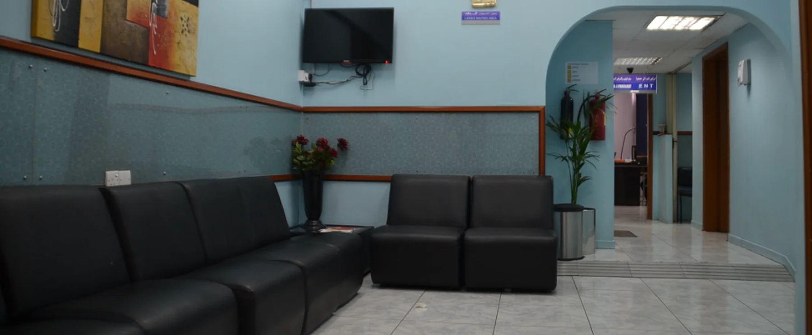

Call 04 223 8612 to book any of these. Not sure which doctor you need? Call and ask, and we'll tell you who to see.
Family medicine
Dr Tecil Joy Analil, Dr (Mrs) Anuja Reji, Dr (Mrs) Durraiya Kamal

The waiting room
Primary care for everyone in the family, from a child's first checks to a wide range of adult health needs. The family medicine team does general check-ups, follows up chronic conditions and gives travel vaccinations.
X-ray and ultrasound are here in the clinic, which helps the doctors reach a diagnosis quicker and talk you through the treatment options.
General medical check-ups
Follow-up of chronic conditions
Travel vaccinations
Minor procedures: cauterisation, suturing, excision
Dr (Mrs) Durraiya Kamal, M.B.B.S., M.D. (Paediatrics)
Dr Durraiya runs the well-baby clinic. Children get routine health checks, growth and weight monitoring, and their immunisations according to WHO guidelines.
Special clinics for long-term conditions: diabetes, high blood pressure and high cholesterol (dyslipidaemia). Each visit includes a check-up and advice on how to keep your condition under control.
Dr Durairajan has 30 years in internal medicine, 25 of them in India, where he was a professor and head of internal medicine at a government teaching hospital in Tamil Nadu. He also has ICU, CCU, toxicology and infectious-disease experience.
The physiotherapy room is equipped for traction and electrotherapy, and our physiotherapist also runs cardio-respiratory and neurological rehabilitation programmes.
The radiology department does X-rays and ultrasound scans in the clinic, so your doctor gets the pictures without sending you elsewhere. There are lab facilities in the clinic too.